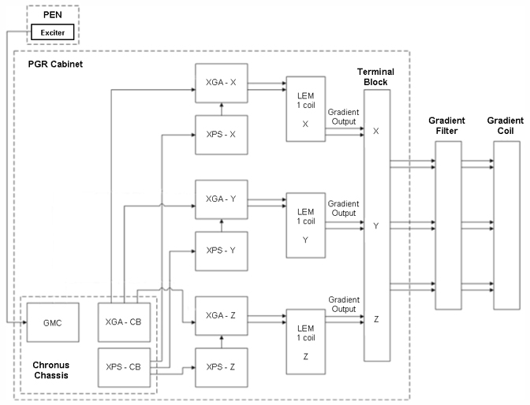
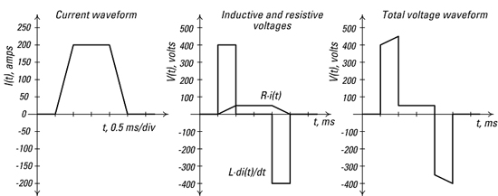
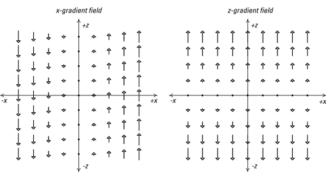

GE Exclusive Use Only
Direction 5670006, Rev# 1
Discovery MR750w GEM Service Methods
Module Version 7.0, Version Date 12/8/09
GE Exclusive Use Only |
The XRMB and XRMW gradient subsystems are a key component of any MR imaging subsystem. The gradient subsystem produces a high precision time and spatially varying magnetic field. The main subsystem components are the gradient amplifier, which produces a time varying current waveform, and the gradient coil, which converts this current into a time and spatially varying magnetic field. This gradient field adds to the main magnetic field, allowing the location of any signal producing tissue or sample to be determined. Spatially, the fields vary linearly with location, so they have a constant gradient; this gives the gradient subsystem its name.
The gradients are a dominant subsystem on many accounts. It is the second most expensive subsystem (second to the magnet). It is the largest power consumer at almost 30 kW, consuming at least half of the total system power while scanning; and it is the second largest subsystem (second to the magnet) in terms of size and weight, at least 1500 kg between a full size Gradient Cabinet and the Gradient Coil.
The gradient subsystem also determines many of the critical performance parameters of the system. It is key in determining the field of view, image resolution, and imaging speed. It is also the main source of two patient safety-related issues, dB/dt and acoustic noise. Given these important qualities, it is no surprise that the gradient subsystem has been a primary area of technology development from the first MR system to the present time. The concepts behind the gradient subsystem are relatively simple, but the implementation requires sophisticated engineering.
The gradient subsystem consists of a gradient driver and a gradient coil. The major components are shown in Illustration 1.
Illustration 1: Subsystem Diagram

Gradient amplifiers transform digital waveforms from the system’s pulse generation into high current waveforms suitable for driving the gradient coil. GEHC uses “gradient driver” to describe package of the gradient amplifiers and their supporting functionality.
Each XGA is a current source, converting the digital inputs to current outputs. A digital input waveform is converted to a high current waveform. The gradient coil converts the current from the amplifier to a magnetic field.
The voltage waveform will be very different from the current waveform. A current source will deliver the voltage necessary to maintain an output current that closely follows the digital input. Since a typical gradient coil is a series inductor/resistor combination, the voltage waveform has inductive and resistive components in it. Using a current source reduces issues related to coil impedance, which is frequency dependent.
Illustration 2: Gradient Current and Voltage Waveforms

Illustration 2 shows a typical trapezoidal current waveform, and the voltage waveform needed to produce it into a gradient coil. The current pulse is 200A peak, with 500μs rise and fall times. The gradient coil is assumed to be a series 1.0 mH inductance and a 0.25Ω resistance. During the ramps in the current waveform, the voltage waveform must overcome both the resistive load (since v=iR, this is a scaled copy of the current waveform) and the additional inductive load (since v=L di/dt), this matches the current’s.
Note that the inductance of the coil dominates the voltage waveform characteristics.
Understanding how energy is stored and dissipated in the coil is key to understanding gradients. Any time there is current, power is dissipated in the coil resistance: this is the familiar i2R term. For example, the 200 A pulse would dissipate 10 KW.
Energy storage is more complex. During ramp up, energy is added to (or stored in) the coil inductance. During the plateaus, inductive energy is constant, neither increasing or decreasing. During downward ramps, energy actually flows out of the coil inductance and back into the amplifier (since current and voltage have opposite polarities). In the example, the peak energy storage is ½Li2 or 20 J. This energy must be delivered to the coil in 500 μs, so the power required is 40KW averaged over the ramp. As with the voltage waveform, the inductive nature of the coil dominates the peak energy requirements of the gradient amplifiers.
Most recent amplifier designs are high voltage switching amplifiers, combining the advantages of high current and voltage capability with high efficiency.
A gradient coil transforms the gradient amplifier output current into a magnetic field. The shape of the field gives the gradient subsystem its name: in MR imaging, linear gradient fields are used to encode the MR signal, allowing spatial localization. For example, an x-gradient field would be positive on the left side of the imaging volume, negative on the right, and would vary linearly between the two sides, passing thru zero at the center of the imaging volume. When an x-gradient field is applied, MR spins on the left side of the bore resonate at a different frequency from those on the right, allowing us to separate left from right.
MRI gradient coils have three separate windings, corresponding to the x, y, and z-axes. Illustration 3 shows an x-gradient field and a z-gradient field, as seen from looking down the y-axis.
Illustration 3: X- and Z- Gradient Fields

The gradient fields shown are the z component of the field. This is because only the z-components are useful to MR imaging, in that they add or subtract directly from the main magnetic field.
The real gradient field cannot have only z-directed components. Even though the x- and y-components are of no use to MR, and may hurt performance (e.g. by increasing dB/dt), we cannot get rid of them. Transverse components (x- or y-directed components) are required by electromagnetic laws.
The gradient coil’s shape will be matched to the magnet it is designed for. Cylindrical gradient coils are used in the superconducting cylindrical bore magnets used in 1.5T and 3.0T scanners. The z-winding of a cylindrical coil looks like a variable rate helix or spring that reverses winding direction in the middle; the x- and y-windings look like a set of four thumbprints wrapped around the coil.
Most modern gradient coil designs are self shielded designs. These designs use separate inner and outer coils. The inner coil primarily creates the gradient fields, while the outer coil creates a reverse polarity gradient field designed to cancel the primary field in regions outside the gradient coil assembly. This greatly reduces the interaction of the gradient coil with the magnet it is mounted in; the effects are seen as reduced magnet vibration and lower induced eddy currents.
The gradient filters attenuate RF frequency (10MHz and above) noise from being carried into the RF shielded scan room. The filters pass only low frequency differential signals, while attenuating both common mode and differential RF transmission.
The high order shim supply supplies current to the high order shim windings built into the gradient coil. (As above, shim windings produce spatially varying fields used to improve the homogeneity of the main magnetic field.) In this application, a compact six channel supply is used. Each supply is ±4 amps at ±30 volts.
The heat exchanger cabinet provides cooling water to the gradient coil.